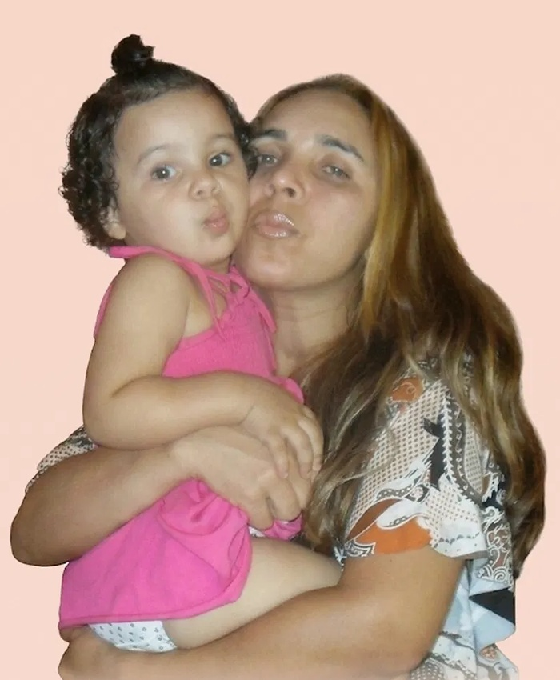

Um diário de afeto
Colo de Mãe
“Mãe é amor em forma de gente”
Um cantinho para guardar os pequenos momentos em que a vida te abraçou. E revisitar o carinho sempre que precisar.
Suas lembranças merecem um lugar especial.
Sobre o projeto
Nem todo cuidado faz barulho. Às vezes, ele vem em um café pronto, uma mensagem ou um abraço demorado. O Colo de Mãe nasceu para guardar essas memórias e os sentimentos que elas despertam — especialmente os que têm cheirinho de mãe.
Porque lembrar também é uma forma de acolher.
Como funciona
Do primeiro registro ao carinho de reler: é simples assim.
1 Crie sua conta
Um espaço só seu, para acolher as lembranças que importam.
2 Registre um momento
Conte sua história e acrescente uma frase, uma música e um sentimento.
3 Veja seus sentimentos
Descubra o que floresce nas suas memórias ao longo do tempo.
Sobre mim
Mariana de Oliveira Soares · 1ADSA · SPTech
Sou a Mariana, estudante de Análise e Desenvolvimento de Sistemas na SPTech. Desde que me entendo por gente, somos só eu e minha mãe, e ela se desdobrou para me dar o melhor. Foi por causa dela que me apaixonei pelo mundo corporativo e, depois de um bootcamp de programação, encontrei na tecnologia o meu caminho. O Colo de Mãe é a minha forma de agradecer: guardar em memórias os cuidados que a vida me deu, e que começaram no colo dela.
Quem me inspira
As pessoas que me ensinaram o que é cuidar.
